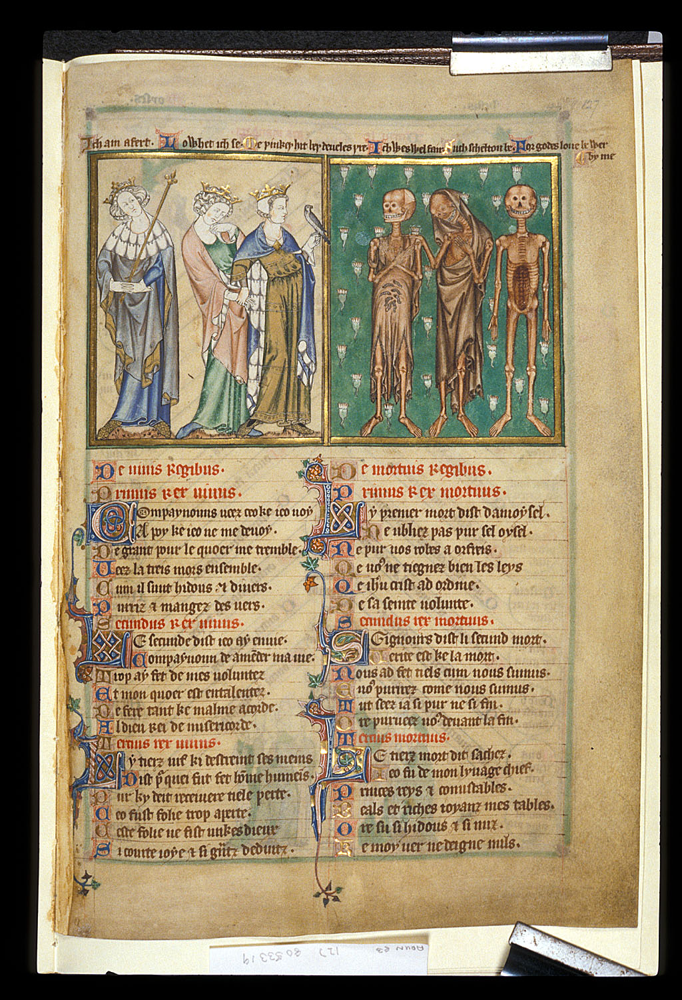

Anno Domini MCLIII
Los muertos se han alzado en la abadía.
Abre las puertas que te separan del exterior
y asciende hacia la luz. No dejes que te alcancen.
El sonido es alto por diseño. Algo se acerca cuando lo oyes cerca.
Miniatura: «Les trois morts et les trois vifs», Ms. Arundel 127, s. XIII — dominio público